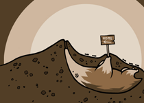

<body>
{$body}

{$menu_bar}


<div class="header">
	<div id="logo">
		<a href="{$website_url}">
		
		</a>
	</div>

	<ul id="menu" class="menu">
		{$menu}
	</ul>
</div>

<div id="body-wrapper" class="clearfix"><!--start body-wrapper-->
<div class="clear"></div>
	<div style="padding-top:40px;" class="slider-wrapper theme-default">
		<div id="slider" class="nivoSlider">
            
			
		</div>
    </div>

	<div class="box">
		<h1>Latest Articles</h1>
    </div>

<!-- images above articles -->
                    <!-- you can simply delete this or keep it :D -->
	<div class="one_fourth"><!--start top half content-->
		<div class="fancy"><a id="fancybox" href="images/210-150-2.png"></a></div>
	</div>
	<div class="one_fourth">
		<div class="fancy"><a id="fancybox" href="images/210-150-1.png"></a></div>
	</div>
	<div class="one_fourth">
		<div class="fancy"><a id="fancybox" href="images/210-150-2.png"></a></div>
	</div>
	<div class="one_fourth column-last">
		<div class="fancy"><a id="fancybox" href="images/210-150-3.png"></a></div>
	</div><!--end top half content-->

	<div class="clear"></div>
<!-- end images above articles -->


	{$articles}
    
    <div class="clear"></div>

